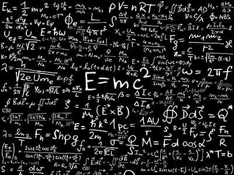
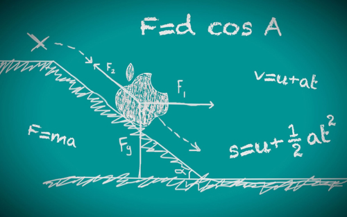
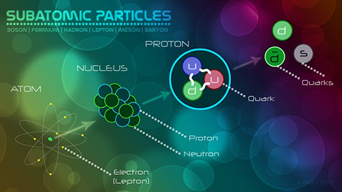

Pengantar

Fisika adalah salah satu disiplin akademik paling tua, mungkin yang tertua melalui astronomi yang
juga termasuk di dalamnya.Lebih dari dua milenia, fisika menjadi bagian dari Ilmu Alam bersama
dengan kimia, biologi, dan cabang tertentu matematika, tetapi ketika munculnya revolusi ilmiah pada
abad ke-17, ilmu alam berkembang sebagai program penelitian sendiri. Fisika berkembang dengan banyak
spesialisasi bidang ilmu lain, seperti biofisika dan kimia kuantum, dan batasan fisiknya tidak
didefinisikan dengan jelas. Ilmu baru dalam fisika terkadang digunakan untuk menjelaskan mekanisme
dasar sains lainnya serta membuka jalan area penelitian lainnya seperti matematika dan filsafat.
Fisika juga menyumbangkan kontribusi yang penting dalam pengembangan teknologi yang berkembang dari
pemikiran teoretis. Contohnya, pemahaman lebih lanjut mengenai elektromagnetisme atau fisika nuklir
mengarahkan langsung pada pengembangan produk baru yang secara dramatis membentuk masyarakat modern,
seperti televisi, komputer, peralatan rumah tangga, dan senjata nuklir; kemajuan termodinamika
mengarah pada pengembangan industrialisasi, dan kemajuan mekanika menginspirasi pengembangan
kalkulus.
Fisika Klasik

Fisika klasik adalah fisika yang didasari prinsip-prinsip yang dikembangkan sebelum bangkitnya teori
kuantum, biasanya termasuk teori relativitas khusus dan teori relativitas umum ,mekanika klasik
(hukum gerak Newton dan lagrangian serta mekanika Hamiltonian), elektrodinamika klasik, dan
termodinamika klasik. Pada awal abad 17, Galileo membuka penggunaan eksperimen untuk memastikan
kebenaran teori fisika, yang merupakan kunci metode sains. Galileo memformulasikan dan berhasil
menguji beberapa hasil dari dinamika mekanik, terutama inersia.
Kelas:
- Mekanika Klasik
- Elektrodinamika
- Termodinamika
- Teori Relativitas
Fisika Modern

Fisika modern merupakan salah satu bagian dari ilmu Fisika yang mempelajari perilaku materi dan
energi pada skala atomik dan partikel-partikel subatomik atau gelombang. Pada prinsipnya sama
seperti dalam Fisika Klasik, namun materi yang dibahas dalam Fisika Modern adalah skala atomik
atau subatomik dan partikel bergerak dalam kecepatan tinggi. Untuk partikel yang bergerak dengan
kecepatan mendekati atau sama dengan kecepatan cahaya, perilakunya dibahas secara terpisah dalam
teori relativitas khusus.
Kelas:
- Teori Atom
- Radiasi Benda-Hitam
- Percobaan Franck-Hertz
- Percobaan Geiger-Marsden
- Lensa Gravitasi
- Percobaan Michelson-Morley